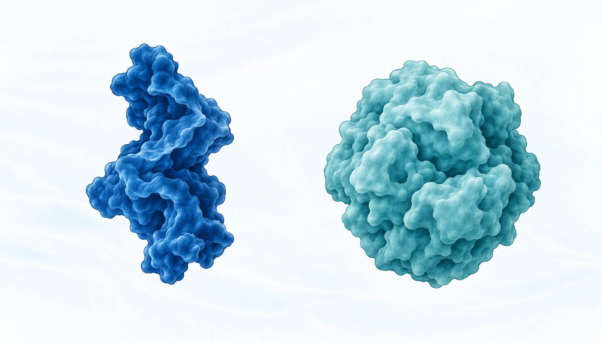
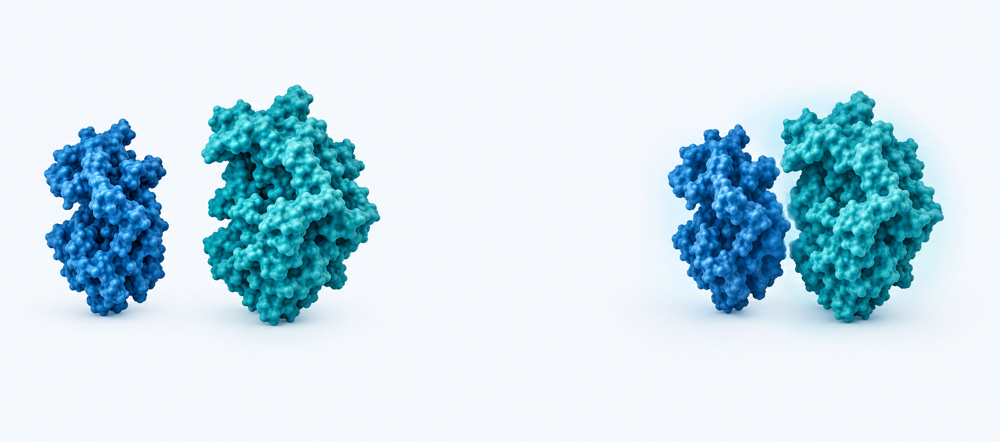
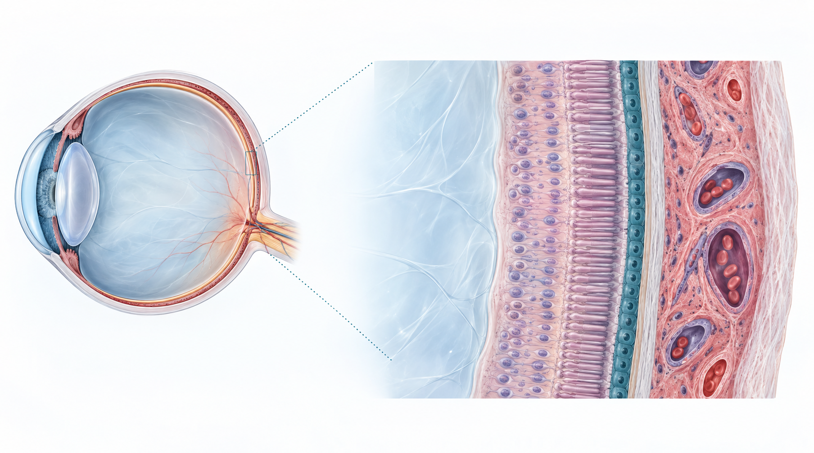
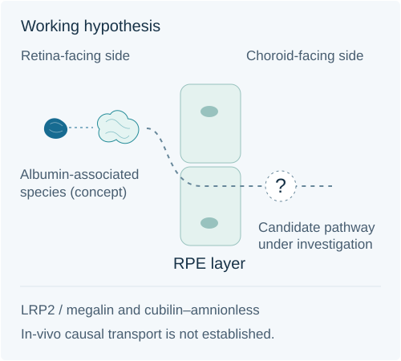

Disease-focused design
We select therapeutic mechanisms for defined disease settings, recognizing that incomplete response can have different causes.
For the moments we want to keep seeing.

Company
Our approach
We select therapeutic mechanisms for defined disease settings, recognizing that incomplete response can have different causes.
Molecular architecture and formulation must support exposure at the tissues where a biologic is intended to act.
Each candidate follows its own development path. Efficacy, safety and durability must be established for each program.
OcuHLE-X
Molecule and formulation.
Designed together.


⇌How long a biologic remains in the vitreous and how much reaches relevant tissues are different questions. Both inform candidate development.
Swipe to explore the anatomy

Different questions, different levels of evidence.
Preclinical observations
Preclinical observations support development; they do not establish human tissue exposure or treatment benefit.
Early clinical observation
Working mechanistic hypothesis
Hypothesis under investigation
LRP2 (megalin), cubilin and amnionless are being studied as candidate contributors to uptake and trafficking at the RPE.
A causal receptor-mediated transport pathway has not been established in vivo.
These preliminary internal readouts support further investigation. They do not determine which species is transported, prove in-vivo causality or quantify the pathway’s contribution.

Molecule design, albumin-associated populations, binding behavior and formulation stability are characterized together as the platform advances.
September 2026 scientific assessment · qualitative summary for review
Pipeline
Investigational programs with distinct biological rationales and development paths.
Research
Selected peer-reviewed studies describe distinct research approaches and models. They should be read within their experimental scope.
Our people
Partner with Quaerite
2/F, Building C9, Yiyuan, No. 65 Xingshikou Lu, Haidian District, Beijing, China.